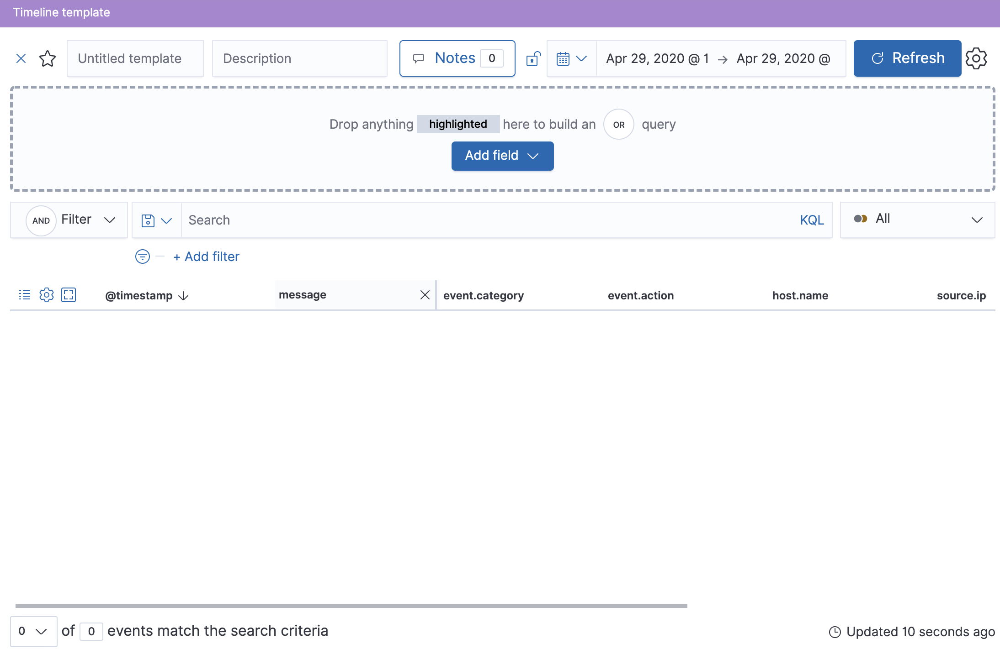
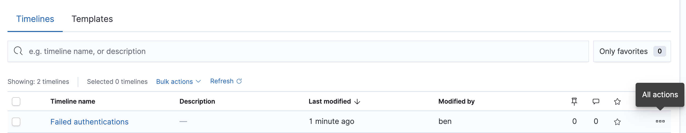

About Timeline templatesedit
You can attach Timeline templates to detection rules. When attached, the rule’s alerts use the template when they are investigated in Timeline. This enables immediately viewing the alert’s most interesting fields when you start an investigation.
Templates can include two type of filters:
-
Regular filter: Like other Kibana KQL filters, defines both the source
event field and its value. For example:
host.name : "win-server". - Template filter: Only defines the event field, and uses a placeholder for the field’s value. When you investigate an alert in Timeline, the field’s value is taken from the alert.
For example, if you define the host.name: "{host.name}" template filter, when
alerts generated by the rule are investigated in Timeline, the alert’s
host.name value is used in the filter. If the alert’s host.name value is
Linux_stafordshire-061, the Timeline filter is:
host.name: "Linux_stafordshire-061".
For information on how to add Timeline templates to rules, see Select rule type and scope.
When you load Elastic Security prebuilt rules, some prebuilt Timeline templates are also loaded. You can attach these templates to detection rules. The following templates are loaded:
-
Generic Endpoint Timeline: Useful for investigating Elastic Endpoint security alerts. -
Generic Process Timeline: Useful for investigating process-related alerts. -
Generic Network Timeline: Useful for investigating network-related alerts.
You can duplicate prebuilt templates and use them as a starting point for your own custom templates.
Timeline template legendedit
When you add filters to a Timelime template, the items are color coded to indicate which type of filter is added. Additionally, you change Timeline filters to template filters as you build your template.
- Regular Timeline filter
-
Click
Convert to template fieldchanges the filter to a template filter:
- Template filter
-

When you convert a template to a Timeline, template filters with placeholders are disabled:

To enable the filter, either specify a value or change it to a field exists filter (see Edit existing filters).
Create a Timeline templateedit
- Go to Security → Timelines.
-
Click the Templates tab, and then Create new timeline template.
 - Give the template a title.
- Optionally, add a description and notes.
-
To add filters, click Add field, and then select the required option:
-
Add field: Add a
regularTimeline filter. - Add template field: Add a template filter with a value placeholder.
-
Add field: Add a
You can also drag and send items to the template from the Overview, Hosts, Network, and Detections pages.
Example
To create a template for process-related alerts on a specific host:
-
Add an ordinary filter for the host name:
host.name: "Linux_stafordshire-061" -
Add template filter for process names:
process.name: "{process.name}"

When alerts generated by rules associated with this template are investigated
in Timeline, the host name is Linux_stafordshire-061, whereas the process name
value is retrieved from the alert’s process.name field.
Manage existing Timeline templatesedit
You can view, duplicate, delete, and create templates from existing Timelines:
- Go to Security → Timelines.
-
Click the Templates tab.
 -
Click the All actions icon in the relevant row, and then select the action:
- Create timeline from template
- Duplicate template
- Delete template
To perform the same action on multiple templates, select templates and then the required action from the Bulk actions menu.
You cannot delete prebuilt templates.
Export and import Timeline templatesedit
You can import and export Timeline templates, which enables importing templates
from one Kibana space or instance to another. Exported templates are saved in an
ndjson file.
- Go to Security → Timelines.
- Click the Templates tab.
-
To export templates, do one of the following:
- To export one template, click the All actions icon in the relevant row and then select Export selected.
- To export multiple templates, select all the required templates and then click Bulk actions → Export selected.
-
To import templates, click Import Timeline and then select or drap-and-drop the template
ndjsonfile.Each template object in the file must be represented in a single line. Multiple template objects are delimited with newlines.
You cannot export prebuilt templates.